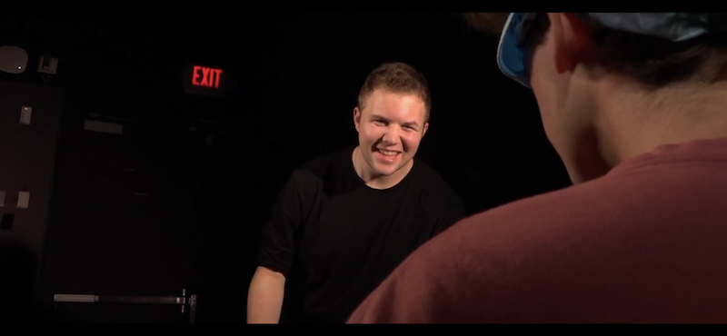
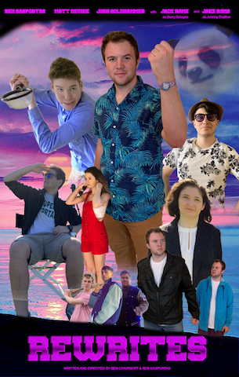

Major Writing Credits
Chip Tripped: The Ruse of a Lifetime

This film was the sequel to "Chip Tripped", which was written and directed by my friend. So it was a challenge to take existing voices and craft a satisfying follow up, but my experience writing this gave me the skills I needed to do it again in the future.
Rewrites

Rewrites was my first feature length film, and I co-wrote the script with a friend of mine. It was a new experience to work with a co-writer, and we didn't always agree on everythhing. But having this experience taught me how to write collaboratively, and how to craft a story with a collaborator.
Matchmaker in College
This is probably the most fun I've ever had writing a screenplay. Since it was parodying a reality television show, I got to write it as people would actually talk off the cuff, rather than how they talk in movies. I also left room for some improvisation in the script, which led to a funnier product once we finished filming.